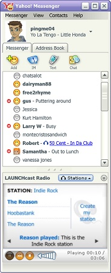
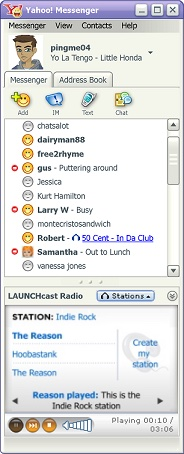
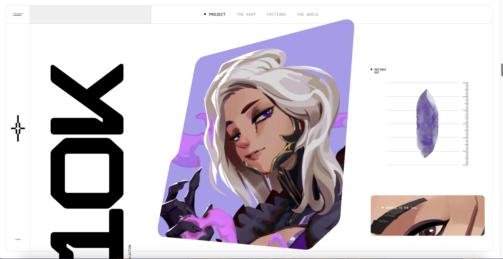

Date: 1/31/23
For today's journal entry, I wanted to focus on the old Yahoo which is something I was super obsessed with when I was 8-9 years of age. So when I looked up these pictures of the old Yahoo Messenger and Yahoo itself, it made me think about how Yahoo back then was so much more fun and better. Or maybe because it gave me the nostalgia, so that's why I think it was better back then. I felt it had more characteristic back then, and now it's more basic and minimal. It's so interesting how even though the yahoo back then was not fancy, but it felt better to me. It shows that having a better and cleaner design doesn't always mean good. It's the experience that matters. In my case, the reason I really like Yahoo back then was because of the avatars and the emoticons. There weren't many messenger apps back then which is why Yahoo was enjoyable.
 


Date: 1/27/23
The topic that I chose for this project is “4 Fashion Trends for 2023.” I came upon this topic because I was thinking about a topic that is specifically for 2023. While searching this topic came to my mind. Given that I like looking at fashion, I thought that this topic would be fun to work on. As for the style inspiration, I saw a picture (attached below) in a researching article and then it made me connect to scrapbooks which is something I’ve been into lately. The collage style is something I haven’t done a lot too which is why I thought it would be both fun and challenging to me. This style also allows me to be imperfect and have cut-out pictures that aren’t perfect. I don’t really have a specific site I’m modeling after, just picking up animation inspirations here and there !

Date: 1/16/23
I visited a few websites from the awwwards.com site and the one that caught my eyes the most is kprverse.com
What I really like about this site is how immersive the "scroll transition" is. I think the website really does a good job of keeping a clean minimal layout, yet at the same time making the site feeling very full because of the interactive transition. My screenshots don't quite do the justtice of how amazing this site works but here are some screenshots of the website!

By look through this site it makes me think about how I can use image frames to draw attention. I also noticed the way the clickable words subtle change when you hover your mouse over. I learned that you don't have to make your words big in order to tell people that this is click able. Because users have used many websites, they just know that words that move or change are usually clickable. Also, the placement of the clickable words subtlely hints if they are clickable. In my project, I also would want to have my clickable words/buttons just subtlely change when hovered.
Date: 1/10/23
Here's my first post